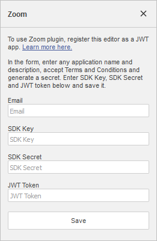

Zoom
Dodatak Zoom vam omogućava da organizujete ili zakažete Zoom sastanke direktno u editoru uz samo nekoliko klikova.
Dodatak je kompatibilan sa samostalno hostovanom verzijom ONLYOFFICE editora i može se ručno dodati u ONLYOFFICE instance korišćenjem Menadžera dodataka.
Instalacija
Da biste instalirali dodatak Zoom,
- Idite na karticu Plugins.
- Otvorite Menadžer dodataka.
- Pronađite Zoom na tržištu dodataka i kliknite na dugme Install ispod.
- Kliknite na ikonu Zoom na kartici Plugins.
- Nastavite sa konfiguracijom dodatka.
Za više detalja, pogledajte ONLYOFFICE API dokumentaciju.
Konfiguracija
-
Registrujte editor kao JWT aplikaciju na stranici Zoom Develop kako biste koristili zakazivanje sastanaka. Popunite sva potrebna polja i aktivirajte aplikaciju. Aplikaciji će biti dodeljen JWT token.
Ako vam je potrebna pomoć pri popunjavanju polja, pogledajte zvaničnu Zoom dokumentaciju.
-
Kreirajte Meeting SDK aplikaciju na stranici Zoom Develop kako biste započeli pridruživanje sastancima. Popunite sva potrebna polja i aktivirajte aplikaciju. Aplikaciji će biti dodeljeni SDK kredencijali.
Ako vam je potrebna pomoć pri popunjavanju polja, pogledajte zvaničnu Zoom dokumentaciju.
- Unesite generisane SDK Key, SDK Secret i JWT Token u odgovarajuća polja u levom panelu ONLYOFFICE editora i kliknite Save.

Kako koristiti
- Idite na karticu Plugins.
- Kliknite na ikonu Zoom.
-
Dodajte temu sastanka i izaberite da li želite da Pokrenete sastanak ili Zakažete sastanak.
- Pokreni sastanak – biće kreiran novi sastanak. Svi detalji će biti prikazani u četu editora. Pritisnite kombinaciju tastera
Alt + Qza brz pristup četu. - Zakaži sastanak – podesite sve potrebne parametre za predstojeći sastanak, kao što su vreme, datum i trajanje. Pristupite Naprednim podešavanjima za dodatne parametre. Kliknite Save kada završite.
Obaveštenja o sastancima se šalju u Chat za online editore i u Comments za desktop editore.
- Pokreni sastanak – biće kreiran novi sastanak. Svi detalji će biti prikazani u četu editora. Pritisnite kombinaciju tastera
- Kliknite na dugme Reconfigure da biste ponovo podesili parametre.
- Kliknite na dugme Meeting mode da biste ušli u meni sastanka gde možete podesiti parametre kao što su Ime, ID sastanka, Email i Lozinka. Izaberite svoju ulogu, region sastanka i jezik sastanka.
- Kliknite na dugme Join da biste se pridružili sastanku ili kliknite na dugme Kopiraj direktni link za pridruživanje da biste kopirali link sastanka u ostavu.
- Nakon što se pridružite sastanku, Zoom prozor će se otvoriti unutar panela dodatka. Kao i u standardnom Zoom pozivu, ovde možete uključiti ili isključiti mikrofon i kameru, izvršavati razne radnje i koristiti režim celog ekrana.
U pregledaču Safari može se pojaviti crni prozor prilikom pridruživanja sastanku. Da bi problem nestao, potrebno je da promenite veličinu prozora dodatka ili uvećate stranicu u pregledaču.